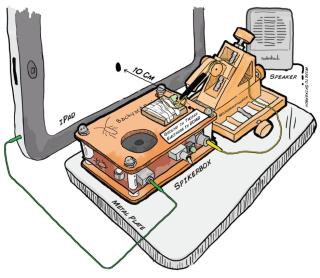
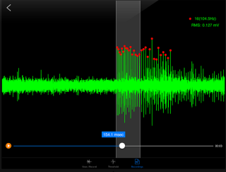
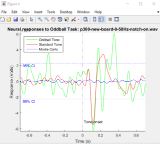
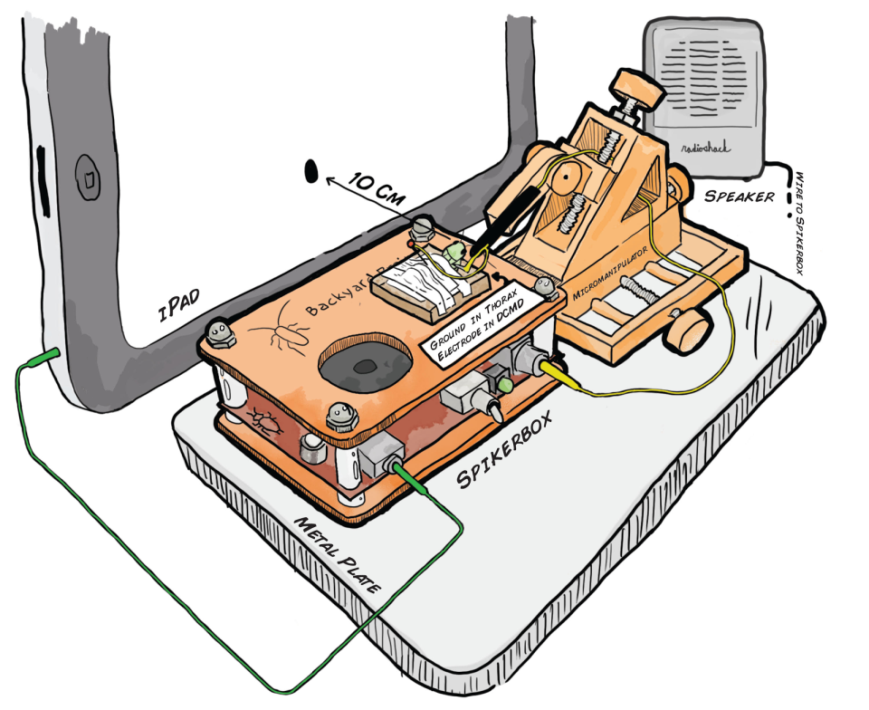
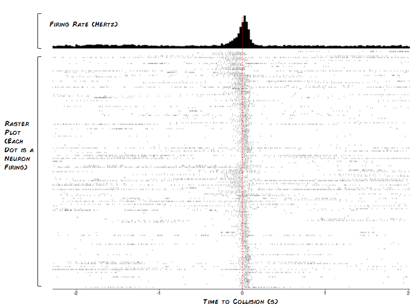
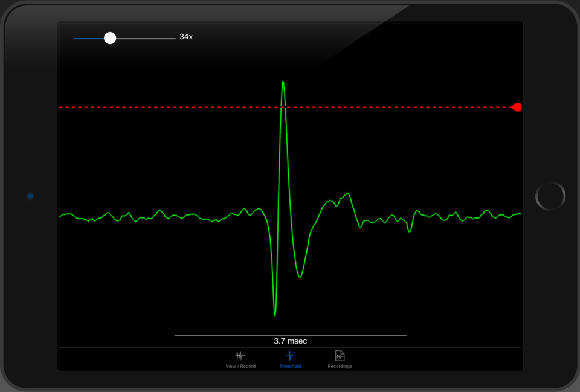
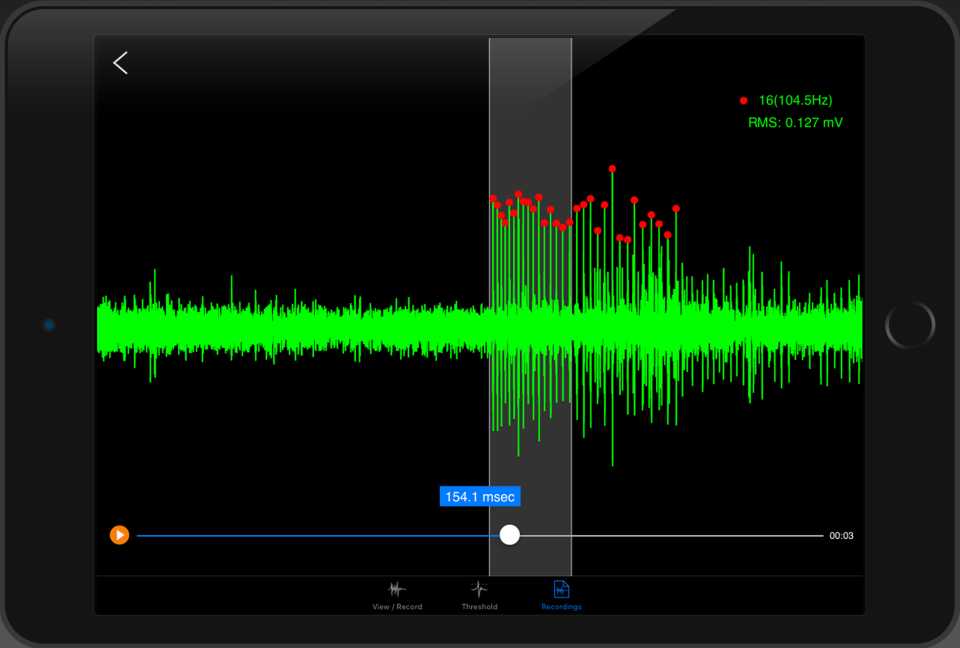
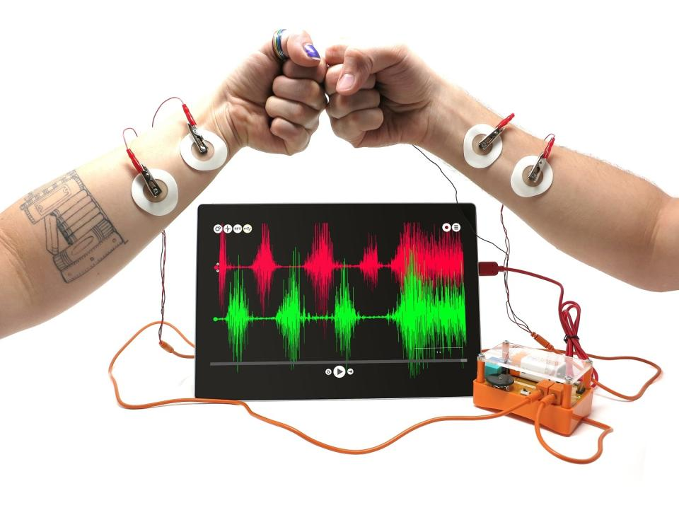
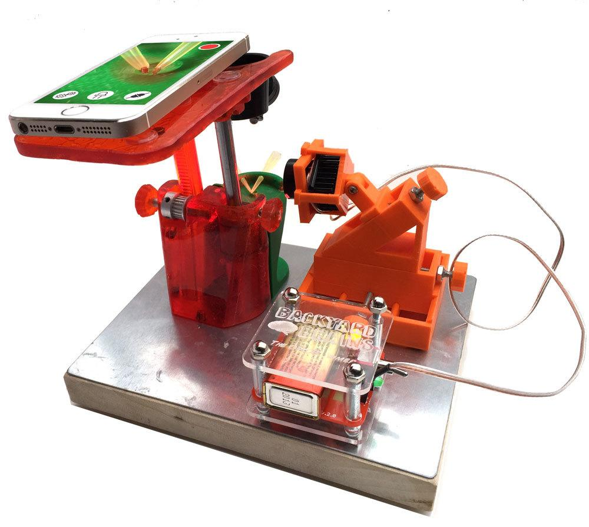

Programming
I am currently working on projects with C++, C, Python, MATLAB,
Objective-C
Long time ago I programmed in C#, Java, JS, PHP, Flex, Action Script
Long, long time ago (1995/96), I programmed in Delphi, Pascal, Atari ST BASIC

iOS application for Neuroscience experiment

iOS app for real time signal recording
C++ multiplatform app for real time signal recording
iOS BLE application for Optogenetic device

EEG auditory P300 ERP data analysis in MATLAB
iOS application development for Neuroscience experiment (DCMD)
The objective of this project was to develop an iPad application capable of providing visual stimulation for neuroscience experiments while simultaneously recording the neuronal responses in live insects during the stimulation process.
Application was made in Objective-C in xCode IDE and it supports several functionalities:
- Generate visual stimulation with looming objects, where the object size follows a specific function over time.
- Record neuronal responses using an electrophysiological amplifier, ensuring synchronization with millisecond precision to the stimulation.
- Setting and executing stimulation protocols with multiple trials, allowing the definition of parameters such as color, duration, size, and velocity.
- Performing statistical analysis on the results and presenting cumulative session graphs as well as individual trial-based displays.


I wrote the whole application during Neuroscience Summer Fellowship on which I was mentor.
The application is available as open-source on GitHub and is detailed in the peer-reviewed paper below:
iOS application for real time Neuroscience signal recording
Goal of this project was to make Objective-C iOS application called Spike Recorder that is used for real time recording and display of biomedical signals like EKG, EEG, EMG, EOG, extracellular neuron recordings etc. Application was made to be used in Biology and Neuroscience classes in schools and universities. It was used by thousands of students and even had several appearances on live TED stage (see the video above)!
Application was continually developed and updated during past 10 years and I was only programmer on the project during last 9 years.
Main features of the application:
- Supports connection to acquisition devices through lightning port using External Accessory Framework
- Supports connection to Backyard Brains acquisition devices through audio input
- Real time display of the multichannel signal
- Fast refresh rate even if displaying up to 20 seconds of multichannel data
- Real time enveloping of the signal
- Real time interpolation of low frequency data for playback on speaker
- Real time filtering
- Real time FFT and spectrogram display
- Recording of the signal to the custom file type
- Dynamic loading and processing of very long files (>8h recordings)
- Thresholding/triggering and averaging of the signal
- Detection of neuron spikes in the signal (Spike sorting)
- Neuron spike analysis: Autocorrelation, croscorrelation, ISI, Average
- AM signal detection and demodulation
- Time and RMS measurements of the signal
- ECG bpm measurement and integration with HealthKit
Beside this application I wrote the same Spike Recorder application for Windows, macOS and Linux in C++ and firmware for MFi iAP2 devices that connect to Apple Lightning port.


C++ multiplatform app for real time Neuroscience signal recording

Goal of this project was to make C++ multiplatform application called Spike Recorder that is used for real time recording and display of biomedical signals like EKG, EEG, EMG, EOG, extracellular neuron recordings etc. Application was made to be used in Biology and Neuroscience classes in schools and universities.
Application was continually developed and updated during past 10 years and I was only programmer on the project during last 9 years. I wrote about 95% of the application's code. It is open source code and it is made to run on Windows, macOS and Linux platform.
Main features of the application:
- Single code base for Window, macOS and Linux
- Supports dozens of Backyard Brains devices through audio input or USB CDC and HID.
- Real time audio processing
- Real time display of the multichannel signal
- Fast refresh rate even if displaying up to 20 seconds of multichannel data
- Real time enveloping of the signal
- Real time filtering
- Real time FFT
- Recording of the signal to the custom file type
- Dynamic loading and processing of very long files (>8h recordings)
- Thresholding/triggering and averaging of the signal
- Detection of neuron spikes in the signal (Spike sorting)
- Neuron spike analysis: Autocorrelation, croscorrelation, ISI, Average
- AM signal detection and demodulation
- Time and RMS measurements of the signal
Beside this application I wrote the same Spike Recorder application for iOS platform in Objective C and firmware for dozens of devices that connect to this app.
iOS application for interfacing BLE Optogenetic device

The objective of this project was to create an iOS application designed for controlling an Optogenetic stimulation device using Bluetooth Low Energy (BLE). Additionally, this iOS application served the dual purpose of capturing experiment videos through a 3D printed microscope. The entire system was developed with the educational market in mind, targeting high schools and universities.
The application was developed entirely in Objective-C and was compatible with the firmware of the BLE TI CC2541. The application's key functionalities included:
1.) Establishing a connection with the BLE device and configuring parameters such as the frequency, intensity, and duration of the stimulation LED light.
2.) Enabling users to initiate stimulation directly from the application, triggering the hardware.
3.) Recording experiment videos and overlaying information regarding the stimulation in real time within the recorded video.
In the development process, I utilized xCode for creating the iOS application and IAR Embedded Workbench for the firmware associated with the BLE TI CC2541.
Whole project is open-source and can be found on the GitHub.
EEG auditory P300 ERP data analysis in MATLAB
The objectives of this project were as follows:
- Implement protocol for auditory stimulation for P300 oddball experiment on Arduino device
- Perform preprocessing on recorded EEG data, which involved artifact removal, signal filtering, and downsampling.
- Compute the average Event-Related Potentials (ERPs) for both oddball and normal stimuli and estimate confidence intervals through Monte Carlo simulations using MATLAB.
The entire project is available as open-source on GitHub (please refer to the attached link for more details).
Please note that beside this analysis I wrote firmware for recording device and desktop software for recording of the EEG signal in C++.